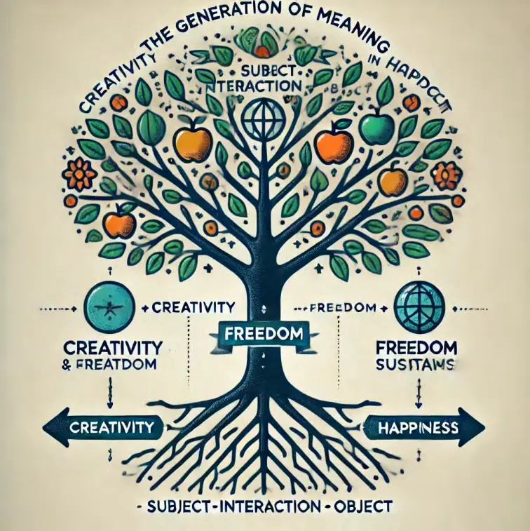
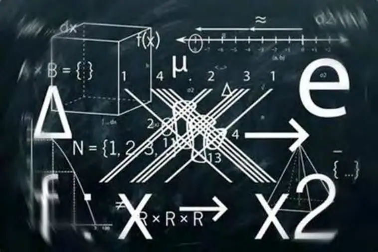

Teaching Wisdom: A Generative Ontology of Pedagogy
摘要（Abstract）
传统教育体系将“教学”视为知识的传递、能力的培养和规范的执行。教师作为“知识掌握者”站在讲台之上，学生作为“空白容器”坐在讲台之下，教学被设定为一场“内容的转移工程”，仿佛智慧本身可以像商品一样被压缩、包装、输出与灌输。这种“命题式教学观”不仅统治了西方理性主义的教育系统，也在东方应试文化中被无限放大与工具化。在这一体系下，教学智慧逐渐沦为“控制知识结构的能力”，教学行为退化为“标准路径的复刻”，学生成为“接收-反馈”的评估单位，而教师则成为“语法正确+情绪稳定”的系统执行器。
然而，21世纪的世界已经进入高度复杂、信息过载、情境剧烈变化的时代，传统教学模式下的“认知转移逻辑”已无法有效生成真实的理解、创造性的思维与意义感的建构。学生在标准化流程中丧失了方向感，教师在“绩效化指标”中丧失了主体性，而教育本身也逐渐丧失了存在的意义。在这种教育危机之中，我们必须重新追问一个最根本的问题：
教学的智慧是什么？
教与学之间，真正发生了什么？
教学不是传授的行为，而是一种结构的生成吗？
本论文以“发生学”为本体哲学立场，结合“主—客—互动（SIO）结构论”与“三律节奏智慧学”（特征律、自由律、幸福律），系统提出一种新的“生成性教学本体论”。我们认为：
教学的本质不是传授“已有的知识”，而是激发、组织并协同发生“结构的智慧”；
教学行为是一个多主体、多张力、多路径的生成系统，是教师与学生在面对“任务客体”时共同生成节奏的过程；
真正的教学智慧，不在于“谁讲得清”，而在于“谁能与学生一起生成路径、组织节奏、释放意义”。
我们提出，教学的“三律智慧结构”如下：
1. 特征律（张力识别律）：教学必须从“差异”与“张力”出发，不是压制学生的不同，而是识别并组织张力，使教学成为“结构调度”的现场。
2. 自由律（路径生成律）：教学不是引导学生找到“正确答案”，而是与学生一起展开多路径的协同生成。真正的教师不是讲者，而是路径共创者。
3. 幸福律（节奏组织律）：教学的目标不是“测试正确”，而是“结构的共鸣”。意义不是评估的结果，而是在节奏参与中自然生成的状态。
全书将围绕这三律展开，从教学危机、教师身份、课程结构、学习节奏、评估系统等角度，重新建构智慧教学的发生学基础，提出教学的“结构生态转型”策略。我们强调：
教学的未来，不属于掌握知识的人，
而属于能与他者共生节奏的人。
本书不仅是献给教育哲学家的，也是献给每一位教师、教育实践者与正在学习的生命——愿你们在每一次教学互动中，不再问“讲得清不清楚”，而开始问：“我们之间的智慧结构，是否已经发生？”
引言
从“传授”到“生成”：教学智慧的哲学重建之路
一、当代教育的失速：知识愈多，智慧愈少？
在今日的教室、讲堂与在线学习平台上，我们所见的教学越来越“高效”：
知识内容被精确分类，教学流程被标准化固化，评估体系日益精准，甚至连学生的认知负荷都可以用算法进行调配。
但我们也同时看到另一幅景象：
教师普遍倦怠，抱怨“学生没有动力”“教学失去意义”；
学生普遍焦虑，在信息的海洋中“学得越多，越迷茫”；
家长普遍无助，望子成龙的愿望常常转化为“教育内卷”的疲惫；
教育系统普遍失语，改革的口号喊了几十年，课程依然是“灌输式”“考核导向”“评价为王”。
于是我们必须发问：
教学到底出了什么问题？
为什么我们越“懂教学”，学生却越“无法成长”？
为什么智慧在教室中缺席了？
是不是我们理解“教学”的方式，从一开始就出了本体性的偏差？
二、教学不是内容传输，而是结构生成
我们提出一个本体论命题：
教学，不是信息的转移，而是结构的发生。
教师的使命，不是“传授答案”，而是“组织张力，生成路径，展开节奏”。
这种说法，可能初听让人感到陌生，甚至激进。但它源自我们对传统教学观念的系统性批判。
我们所批判的，不只是教学方式的落后，而是整个教学本体的错构。
传统教学观（无论东方或西方）大多基于“知识传授模型”，即：
知识是现成的、外在的、客体性的；
教师是知识的掌握者与解释者；
学生是空白的接收器，等待灌输与评估；
教学是“主-客”之间的单向信息流；
教育的成功标准是“掌握多少知识”、“答对多少题目”。
这一套逻辑，简化了教育，也扭曲了教育：
它将“智慧”降格为“正确性”；
它将“成长”削减为“功能化表现”；
它将“互动”替换为“指令系统”；
它将“意义”消解为“标准答案”；
它将“教学”变成了一种看似精密、实则死板的认知工程。
三、教学的本体必须重建：以“发生”为核心的教学哲学
为此，我们提出：“教学的本体必须重建”，而这一重建，必须建立在一种发生学的视角之上。
我们提出以下关键命题：
1. 教学不是传授，而是生成
教学不应视为“知识的转移”，而应理解为一种结构的“生成过程”，是一种主—客—互动（SIO）之间的意义构造系统。
2. 学生不是被塑造的容器，而是结构的共鸣者
每一位学生都是差异化的存在，他们的学习从不是复制他人的路径，而是通过自身张力与教师互动，生成独特节奏。
3. 教师不是控制者，而是节奏组织者
教师不是设计控制路线的建筑师，而是与学生在张力中共创节奏的引导者。
4. 教学不是流程，而是发生
真正的教学，不存在于“教案”中，不存在于“流程图”中，不存在于“考核系统”中，而只存在于“主-客-互动的此时此刻”，在“结构被组织”的现场。
四、SIO结构与三律哲学：教学发生的理论地基
本书的理论根基建立在两个核心框架上：
1. SIO结构论（Subject–Interaction–Object）
我们认为，一切教学的本体结构，都是主（教师）—客（知识/任务/问题）—互动（教学活动/反馈/反应）的复合体。教学不是“教师对学生”的单向关系，也不是“内容对人”的作用系统，而是一个三元互动生成系统。
| 元素 | 定义 | 在教学中的作用 |
|---|---|---|
| 主体 S | 教师或学生的存在状态 | 主动感知、选择、调节、投射节奏意图 |
| 客体 O | 教学任务/内容/问题/知识结构 | 提供张力、结构挑战、路径入口 |
| 互动 I | 教学动作、媒介、活动、反馈 | 节奏生成的场域，是教学智慧的发生地 |
2. 三律节奏哲学（特征律、自由律、幸福律）
三律是我们对智慧生成过程的基本节奏结构。
特征律：教学智慧始于差异张力的识别。教师要看见学生不是“错误”，而是“差异化结构的邀请”。
自由律：教学智慧在于多路径生成。教师不是给出唯一通道，而是激发多种路径展开的可能性。
幸福律：教学智慧完成于节奏共鸣。教学不是让学生“理解”，而是让师生“共同在结构中共鸣”，在“意义流通”中建立“教育幸福”。
五、从“教学技巧”到“教学本体”：走出工具主义陷阱
我们所批判的，不仅仅是教学工具、教学方式、教学策略的问题，更重要的是：
教学观念已被工具化思维完全吞噬。
教学不再是智慧活动，而是一种管理行为；
教师不再是智慧生成者，而是执行KPI的“教学技术员”。
这种工具化幻觉，将教育系统困在“操作正确性”中，使得教育沦为“标准流程制造工厂”，从而扼杀了一切可能的“意义生成”与“结构共鸣”。
我们要说：
教学技巧当然重要，但不能成为“智慧替代物”；
教案流程当然有用，但不能取代“教学之道”；
教学技术当然可以辅助，但永远不能替代“教学本体”。
六、本书的使命：让教学重新成为“智慧发生的艺术”
本书不是一本教育方法论手册，不是教学技巧指南，也不是课程开发策略工具包。
它是一部教学智慧的本体重建工程，它试图回应：
在教学中，智慧如何真正“发生”？
在教学中，教师与学生如何生成意义？
在教学中，结构如何组织、节奏如何展开、意义如何共鸣？
我们邀请您一起进入一个全新的教学宇宙：
不再问：“我该怎么讲？”
而要问：“我们在什么结构里互动？”
不再问：“学生会不会做题？”
而要问：“学生与任务的互动是否已经张力展开？”
不再问：“我有没有教好？”
而要问：“我们是否共鸣出一种节奏，使结构获得了意义？”

第一章
教学危机的本体诊断：从知识输送到结构崩塌
一、教学的“假繁荣”：效率提升中的意义坍塌
如果我们仅从技术角度衡量，今天的教学似乎前所未有地“成功”：
在线课程平台爆发式增长，几乎任何内容都可在线学；
AI助教、个性化推荐系统大幅提高教学效率；
教育数据追踪与学情诊断系统日趋精准；
学校课程标准化流程愈发完备，教学目标精细到每个“学习单元”。
但是，在这看似“高效化”的进步背后，我们也看到以下困境：
学生普遍缺乏学习动机与主动探究的激情；
教师陷入教学内容与评估系统之间的“两难疲劳”；
教育行为越来越“流程化”，却越来越“失真化”；
教育哲学与教育实践之间裂痕日益扩大。
这一切说明：
教学系统越精密，教学智慧却越稀薄；
知识被传授得越来越多，意义却生成得越来越少。
二、三种幻觉：教学本体错构的根源
1. 信息幻觉：以为知识就是智慧
大多数课程设计者、教育者仍然将“教学智慧”简化为“知识编排能力”：
教师被训练如何“讲清楚”；
教案被设计如何“逻辑连贯”；
教材内容被划分为“知识点—训练—反馈—检测”。
于是教学退化为：
“信息-处理”工程，而非智慧发生过程。
“懂得多” ≠ “能生成”；
“讲得清” ≠ “能引动节奏”；
“知识图谱完善” ≠ “结构智慧展开”。
2. 控制幻觉：以为教学就是流程设计
近年来，许多教学改革以“教学流程标准化”为突破口：
设定教学目标；
明确课堂节奏；
设计板块流程；
设置评估标准。
这在某种程度上提升了教学的“可控性”，但也陷入了另一种陷阱：
教师成了“流程执行者”，学生成了“流程反应者”。
当所有教学被简化为“是否走完流程”，
智慧便从教育中被排除，取而代之的是标准化秩序的僵化结构。
3. 效率幻觉：以为教学必须“快而准”
数字时代的一大诱惑是“提速”与“精准”：
5分钟学会一项技能；
10分钟掌握一个公式；
一堂课完成所有测试任务。
但教育本质上是结构性生成的过程，
它需要：
张力的展开；
路径的试错；
意义的沉淀。
将教学转为“信息抓取”与“短平快的操作模板”，
只能训练“表层应对能力”，却剥夺了学生结构生长的空间。
三、教育哲学的转身：从知识拥有到结构共创
1. 教育的本体困境：从“教内容”到“教什么都没用”
哈佛教授David Perkins曾提出一个著名的教育问题：
“学校教了那么多内容，为什么大多数都在毕业后消失了？”
这不仅是记忆力的问题，而是“本体结构”的问题：
如果学生在学习过程中没有参与节奏的生成，
如果知识只是以“命题—解释—例子—练习—测评”的模式单向运作，
那么学生脑中所留下的，就不是“结构”而只是“标签、指令与记忆片段”。
这说明：
知识的拥有，不等于意义的发生；
内容的掌握，不等于智慧的生成。
2. 真实教学的本质：不在内容，而在节奏结构的组织
真正有智慧的教学，从来不是“内容更丰富”，而是：
在课堂中组织了张力；
在活动中展开了路径；
在共鸣中生成了意义。
换句话说：
教学从来不在“讲了什么”，
而在“结构是否生成”，
“节奏是否流动”，
“意义是否共鸣”。
这就是教学哲学的发生转向。
3. 从主客二分到主客互动：教学SIO结构的觉醒
传统教学始终在主（教师）与客（内容）之间构建线性通道：
教师（主） → 知识（客） → 学生（被动接收者）
但这种结构剥夺了“互动的发生空间”，它无法回答：
学生如何参与节奏？
知识是否带有张力？
教师如何在结构中“共同展开”而非“灌输封装”？
因此我们提出：
教学必须进入SIO结构，即：
主体（S）、客体（O）与互动（I）的三元张力发生网络。
在SIO视角下：
| 教学角色 | 功能 |
|---|---|
| S（主体） | 教师与学生共同作为张力感知者与路径发起者 |
| I（互动） | 教学的活动、对话、练习、操作、反馈等 |
| O（客体） | 知识、任务、问题，成为张力触发器与结构展开点 |
这种结构强调：
知识不是“讲清楚”给学生听，
知识是通过教学互动被组织、生成、协同的节奏对象。
4. 教育的真正意义：生成一个可以“自己发生”的生命结构
最终，真正的教学，不是“让学生知道了什么”，而是：
让学生成为一个可以自己生成结构、自己展开路径、自己组织意义节奏的人。
智慧的学生不是“懂了”，而是“能在复杂张力中走出自己的节奏”。
智慧的教师不是“讲得好”，而是“能在节奏中生成结构的协同者”。
四、教学智慧的重启：从崩塌回到发生
教学并没有消失，智慧也没有离开。
它只是被我们误解、扭曲、工具化、流程化。
但只要我们重新回到发生学结构：
愿意与学生一起进入张力；
愿意不预设路径，而共生路径；
愿意在节奏中生成意义、在结构中展开共鸣；
我们就能：
让教学重新成为生命的节奏生成场，
而不是知识的流水线、观念的集装箱、考试的舞台。
第二章
教学的特征律：在差异中发现张力，在张力中进行混沌、自组织和特征涌现来展开教学
一、教学不是“统一”，而是“差异”之组织
现代教育系统往往试图追求一种“教学公平性”，其逻辑如下：
教学内容要标准统一；
教学方法要通用高效；
学生表现要量化可比；
学习路径要可控可重复。
然而，这种“统一教学”理念的前提是：
教育对象之间的“可等价性”。
也就是说，它默认学生是“学习机器”，
可以被统一灌输、统一评估、统一成长。
但真实的教育现场告诉我们：
每个学生的背景、节奏、情感、认知方式都不相同；
每个班级、学段、学科的教学张力都不一样；
教学不是输入命令，而是进入一场差异复杂的互动网络。
我们必须重新承认一个教育真相：
教学不是“为差异做出适应”，
而是“以差异作为结构生成的起点”。
二、特征律：教学智慧的第一道门槛
特征律是三律智慧结构中的第一律，强调：
一切教学智慧的发生，必须从“差异的识别”开始。
只有当教师能准确感知教学现场中真实存在的张力结构，
才有可能组织路径、展开节奏、生成意义。
这就要求教师不是“执行标准流程”，而是成为：
张力识别者：谁与谁之间存在结构冲突？
差异唤醒者：哪些学生无法进入当前节奏？
秩序挑战者：哪些教学结构已经僵化？
混沌允许者：是否容许学生表达未成形的混乱？
三、差异不是干扰，而是结构之源
1. 教育的“去差异化幻想”
许多教育者被训练成“流程优化者”，
于是对“差异”充满防御：
“这个学生怎么总是跑题？”
“那个学生的节奏太慢了，影响整体教学。”
“这些孩子个性太强，不好管理。”
但这些所谓的“问题”，恰恰是教学张力的真正入口。
2. 差异本质是未展开的“特征簇”
在发生学认知中，差异意味着：
每一个学生都是一个潜在的“结构原子团”；
每个反应、偏好、错乱、分心，其实都是“张力结点”；
教学不是掩盖差异，而是唤出其“潜在节奏”。
只有在差异中展开教学，
教学才有可能成为一种真实的“节奏协同”。
四、混沌是教学结构的必经之门
1. 什么是“教学混沌”？
混沌不是混乱，也不是教学失败。
混沌，是在张力结构刚被激活之后、结构尚未形成之前的：
模糊；
多义性；
认知碰撞；
价值不确定；
节奏漂移。
例如：
当教师提出一个真实问题时，学生一片沉默；
当学生之间观点冲突，课堂陷入争论；
当新的学习任务布置下去，大家不知所措；
这些不是“教学错误”，而是结构正在进行“第一次自组织”的信号。
2. 允许混沌，是教师的智慧气度
传统教学观将“课堂安静、有序、正确”作为标准，
因此一旦学生混乱、争议、走题，教师就试图“拉回正轨”。
但发生学智慧告诉我们：
真正的教学，不是“让学生回到正轨”，
而是“识别正在展开的混沌结构”——
并在其中识别新的教学节奏。
教师不是“维持秩序者”，而是“组织混沌生成者”。
五、自组织：从教学“计划”到教学“生成场”
1. 教学计划是“预设路径”，
而教学生成是“结构涌现”。
在传统教育逻辑中，教师拥有“控制力”：
教什么；
教多快；
用什么方式教；
达成什么结果。
而学生必须“配合节奏、接受流程”。
但真实的学习从不按流程运行。
学习不是计划执行，而是节奏协同。
教学不是安排内容，而是激活结构。
当张力足够丰富，混沌开始运作，
学生之间、教师与学生之间，会形成“涌现式协同”。
这种现象称为：
教学的自组织智慧。
2. 案例：涌现中的教学节奏
某教师在教授“城市交通”的议题时，原本设计是讲完“公共交通的优缺点”。
但学生提出：
“为什么我们班到校要迟到这么多？”
于是教师临时改编课程为：
分小组调查通勤路线；
画出“到校地图”；
研究公交与步行的节奏问题；
设计“通勤优化建议书”。
原教学目标虽然没教完“PPT内容”，
但学生却在过程中：
学会了地图阅读；
建构了数据分析意识；
发展了真实参与与表达能力。
这就是在张力中生成路径，在路径中形成节奏，在节奏中生成意义。
六、特征涌现：教学智慧的“花开时刻”
1. 教学不是“信息转移”，而是“特征涌现”
当混沌持续运行、结构开始组织，
教学现场中会发生“认知涌现”。
你会看到：
某个学生突然找到理解方式；
某个群体进入合作状态；
某项任务引发全班高峰互动；
某个看似“最沉默的学生”讲出最具洞见的一句话。
这些，不是教师“安排”的，
而是整个SIO系统在张力—路径—互动中生成出来的教学意义回响。
我们称之为：
特征涌现：智慧在节奏中自动开花的瞬间。
七、教师的任务：不是管理课堂，而是唤醒张力、容纳混沌、等待涌现
教学不再是：
完善流程；
控制节奏；
灌输知识；
执行大纲。
而是：
与学生共同进入结构差异；
在互动中容纳混沌与迷雾；
在路径中组织节奏协同；
在等待中迎来智慧的特征涌现。
这就是：
教学的特征律。
从“差异识别”到“结构混沌”到“自组织”再到“特征涌现”，
教师的角色完成了一次真正的“智慧转身”。
结语：特征律不是教学技巧，而是教学本体的第一律
在这一章中，我们重新揭示：
教学不是传授知识，而是激活结构。
而激活结构的第一步，就是看见张力、允许混沌、生成节奏、等待智慧的涌现。
教学不是“教完了什么”，而是“我们是否一起让某种智慧真正地发生了”。
第三章
教学的自由律（纠缠 → 选择 → 激发）：路径不是告知，而是协同生成
一、自由不是选择题，而是生成结构的权能
现代教育体系在讨论“学生自主性”或“因材施教”时，常常陷入“选择幻觉”：
选A还是B？
走理科路线还是文科路线？
要不要报兴趣班？
教育心理学也热衷于“激发学生选择权”，但这种“自由”大多数仍然是：
在教师设计好的菜单里选项式决定。
我们必须回到教育的本体去问：
真正的自由，是“选项自由”？
还是“路径生成的权能”？
是“自己选择路线”？
还是“与他者一起生成未曾存在的通道”？
本章提出：
自由不是“在已有路径中做选择”，
而是“在张力中组织出原本不存在的路径”。
这就意味着：
教师不是“路线说明书”，
而是“路径协同者”；
学生不是“选项执行员”，
而是“路径共创者”。
二、自由律的教学三段律：纠缠 → 选择 → 激发
我们将自由律分解为三个教学节奏阶段：
| 阶段 | 教学节奏结构 | 描述 |
|---|---|---|
| 纠缠 | 任务张力系统展开 | 学生与问题之间的结构尚未分化，充满不确定性 |
| 选择 | 区分路径方向，形成学习策略 | 学生进入认知分歧点，教师帮助生成多元通道 |
| 激发 | 展开行动，走出个人路径 | 教师支持、共振、重构学生路径，生成意义回响 |
下面逐一展开。
1. 纠缠：教师与学生都要进入“未知张力区”
教学误区：误将“讲清楚”当成“教学开始”
传统观念中，教学的起点是“教师掌握清晰结构并解释出来”。
但自由律认为：
教学的真实起点是“任务、主题、问题”形成的张力纠缠场，
教师与学生必须共同进入“混合张力结构”。
案例：
在一个教学单元“环境污染”的开头：
教师不要直接解释“污染定义”，
而应提出一个现实图景（如：你家门口的河开始发臭怎么办？）
然后让学生讨论、冲突、表达、失控。
这正是“自由的起点”：纠缠
学生不是进入标准答案流程，而是进入：
对问题的不同感知；
对立路径的张力感；
自我节奏的启动点。
教师要做的不是讲清楚，而是：
进入、放大、组织“纠缠张力”。
2. 选择：不是挑出答案，而是生成路径地图
教学误区：误将“引导正确答案”当成“激发思维”
传统教学强调“启发”，但其实常常是在“暗示标准”。
例如：
“你觉得还有什么办法可以减少塑料用量？——有没有想到‘回收’？”
这种“标准答案的引导性教学”，其实剥夺了真正的“路径生成能力”。
自由律教学要求：
让学生暴露原始路径想法；
让不同学生展示不同路径倾向；
教师协助将多路径“组织成结构地图”；
不立即排除“错的路径”，而是让其“进入自组织试验场”。
案例：
围绕“未来交通工具”这一主题，小组学生提出以下设想：
A组：空中飞车；
B组：生物能源马车；
C组：多模式协同交通体系；
D组：拒绝一切科技，重建步行城市。
教师不是挑一个“最科学”，而是：
协助各组“画出自己的路径图”；
设定各自路径中的张力点（例如能源效率、社会公平）；
设计“路径试炼”活动。
这就是教学自由律中最关键的一步：
教师不是裁判，而是“路径地形图”的绘制者。
3. 激发：节奏被点燃，学习进入自主生成
教学误区：认为“学生动起来了”就是“自由了”
许多课堂鼓励小组活动、学生展示、PBL项目。
但如果这些活动的结构本身仍然是“教师设计+学生执行”，
那么自由并未真正发生。
真正的“激发”，必须是：
学生自己提出新的路径需求；
教师愿意修改原定流程，协同学生生成任务；
学生在结构中“组织他人”，而不是“完成任务”。
案例：
在一个围绕“社区饮水安全”的项目学习中，学生发现：
原项目只要求他们制作宣传手册。
但一个小组自发提出：
“我们要去做一次水质检测实验。”
于是教师暂停原计划：
调整课程进度；
帮助他们联系实验设备；
指导其他小组也重新定义任务目标。
这种行为不是“多做点东西”，而是：
教学路径被重新生成，教学节奏被学生点燃。
这就是激发。
三、教师角色重构：从教导者到生成合伙人
传统教师角色：
讲者；
评估者；
权威源头；
答案裁定人。
自由律重构教师角色为：
| 新角色 | 职责 |
|---|---|
| 张力触发者 | 提供真实的问题场域，引爆纠缠张力 |
| 路径协同者 | 协助学生识别多路径可能，搭建通道图谱 |
| 节奏引导者 | 与学生共振节奏，共享结构调整权 |
| 意义守望者 | 见证学习意义的发生，而非仅记录结果 |
四、学生主体性重构：不是“我选了”，而是“我生成了”
学生主体性不是“听话/不听话”，
而是：
是否能感知结构张力；
是否能组织个人节奏；
是否能在混沌中展开自己路径；
是否能将学习节奏扩展为“结构生成权”。
自由律下的学生，不是自由行动，而是自由生成。
五、自由律教学的三大实践原理
| 原理 | 含义 | 教学表现 |
|---|---|---|
| 开放性原则 | 不预设单一正确路径 | 教学目标是生成节奏，不是达成答案 |
| 路径协同原则 | 多路径同时展开并形成结构地图 | 不止个性化，而是多元协奏 |
| 意义激活原则 | 让结构发生回响，激活学生内在使命 | 学习成为意义共振场 |
六、自由不是放任，而是共构节奏的真实勇气
有人担心：
“自由会导致混乱、效率降低、目标失焦。”
但那只是“伪自由”的幻觉。
真正的自由律教学，是：
更高强度的结构感知；
更复杂的路径协同；
更深层的意义共创。
它要求：
教师放下控制的幻觉；
学生放下被动的面具；
课堂成为“结构生成工坊”而非“答题流水线”。
结语：自由律，是教学中最具张力也最具创造性的智慧律
教育不是塑造未来的执行者，
教育是邀请人类一起成为路径的创造者。
自由律所开启的，不只是一个教学技巧，
而是一个文明智慧的新方向：
不再是“我知道，你来听”；
而是“我们一起展开一条未曾存在的路”。

第四章
教学的幸福律（张力—转换—释放）：意义不是测评，而是节奏共鸣
一、教学不是灌输意义，而是生成意义
在传统教学观中，意义被视为教师提供的一套“标准解释”或“未来价值”：“这知识对你将来有用”“这是考试的重点”“这个技能以后能赚钱”。
然而，我们观察到越来越多的学生对这些“意义说明”产生倦怠与怀疑：
“学这些干嘛？”
“我懂了又怎样？”
“反正考试过了，过后也没感觉。”
在这一片意义干涸的教学现场中，我们必须追问：
教学的意义，真的可以被“讲解”吗？
或者，意义其实是在教学过程中生成的节奏回响？
幸福律正是对这一问题的回答：
教学的智慧，不是解释意义，而是组织节奏，生成意义共鸣；
幸福的教学，不是“学生被说服”，而是“师生共振”，共同涌现出意义的节奏结构。
二、张力：教学节奏的起点，不适即智慧之源
幸福律的第一步，不是“感到快乐”，而是“感知张力”。
许多教师担心学生“不理解”“觉得难”“情绪低落”，于是：
简化内容；
拆解任务；
加倍解释；
降低挑战。
但这正是幸福感迟迟不来的原因。
没有张力，就没有教学节奏的起点；
没有挑战，就没有智慧结构的生成场域。
学生的“不会”“不懂”“抗拒”，
不是问题，而是“幸福律”的入口。
教师的任务不是“消除张力”，而是“容纳张力”。
三、转换：结构之舞，不是硬解而是柔构
幸福律的第二步，是结构的转换。
什么是结构转换？
将学生从“认知僵化”转向“节奏流动”；
将知识从“死板术语”转向“张力体验”；
将师生关系从“传输链”转向“共构网”。
结构转换的教学方式包括：
从语言到动作（比说“摩擦力”更有效的是“拉绳对抗”）；
从逻辑到图像（比说“函数变化”更有效的是“画出节奏图”）；
从个体到群体（比“你答出来”更重要的是“你能和他合作完成吗？”）；
这不是“解释更好”，而是“组织结构更柔”。
真正让人幸福的教学，不是“听懂了”，
而是“在结构中感觉到了自己是节奏的一部分”。
四、释放：教学意义的共鸣机制
一旦结构转换发生，学生会进入一种“节奏释放状态”：
情绪释放：“我终于敢表达了。”
身体释放：“我竟然能自己完成这个结构。”
概念释放：“原来是这样啊！”
幸福律认为：
教学的高潮，不是“对答案”时刻，
而是意义在节奏中被自然释放的时刻。
这种释放通常伴随：
微笑、惊讶、沉默；
学生互相点头；
自发补充例子、应用情境；
一种“结构自洽”的愉悦回响。
五、课堂幸福的三个层级：体验、参与、共鸣
幸福教学并不等于“学生开心”，而是存在以下三个渐进层次：
| 层级 | 描述 | 意义回响方式 |
|---|---|---|
| 体验 | 学生感受到张力刺激与教学设计的新颖 | 情绪与注意力被吸引 |
| 参与 | 学生开始表达、提问、反对、协作 | 教学结构被学生进入 |
| 共鸣 | 学生主动组织、生成、迁移结构 | 教学节奏成为学生节奏的一部分 |
传统教学大多停留在“体验”层，
但幸福律的真正目标，是走到“共鸣”。
六、教师如何组织幸福律：从控制者到感应者
在幸福律的教学观中，教师不再是：
“掌控节奏的导演”，
“解释真理的使者”，
“判别对错的法官”。
而是：
张力感知者：谁在挣扎，哪里在混沌；
节奏组织者：何时切换节奏，何时暂停，何时转调；
共鸣守望者：看见学生“发生的那一刻”，在一旁微笑，而不打断。
这要求教师具备：
1. 对情境的结构感知力；
2. 对节奏的调动耐心；
3. 对学生“节奏涌现”的信任力。
七、测评系统的革命：从判断对错到判断共鸣
传统教学的“幸福指标”是考试成绩。
但我们早已知道：
会考试 ≠ 真理解；
分数高 ≠ 真投入；
满分 ≠ 意义共鸣。
幸福律提出新测评逻辑：
| 指标 | 评估内容 |
|---|---|
| 张力进入力 | 学生是否愿意进入未知、混乱、挑战？ |
| 路径生成力 | 学生是否能在张力中展开自己的节奏？ |
| 节奏协调力 | 学生是否能与他人协同、互振、协奏？ |
| 意义迁移力 | 学生是否能将学到的结构迁移到新领域？ |
真正的教学评估，不是“你会不会”，而是：
你的结构是否真正地“被组织”，
是否产生了“属于你自己的节奏”？
八、结语：让教学成为结构意义的共鸣场
幸福律不是软弱的教学情绪管理，
而是结构生成哲学在教育中的高阶呈现。
它告诉我们：
教育不是“交付知识”，
而是“唤醒节奏”；
教师不是“控制节奏”，
而是“协同节奏”；
学生不是“吸收意义”，
而是“成为意义的发生者”。
唯有如此，我们才能告别：
测试焦虑；
无意义疲劳；
学习崩溃症。
让每一堂课成为：
主—客—互动结构中的节奏生成实验场，
让每一个学生在节奏中说出那句话：
“我不是学会了，我是懂得了。”
“我不是答对了，我是共鸣了。”
第五章
教学SIO结构分析：教师—学生—内容三元互动模型
一、教学从来不是二元结构，而是三元张力体
传统教学常被误解为一条直线：“教师讲 → 学生听 → 内容被掌握”。
这种“主→客”二元逻辑主导下：
教师成了单一的“输入者”；
学生成了“被动容器”；
教学被简化为“知识的精准转移”。
但教育本质从不是信息搬运，而是意义生成。
意义不是由教师“交付”，也不是学生“吸收”，
而是在师生与内容的张力关系中展开的节奏过程。
这正是SIO教学本体论的基础结构：
教学 = S（Subject 主体） + I（Interaction 互动） + O（Object 客体）
教学是教师（S）与学生（S）之间，围绕任务或知识对象（O），通过互动通道（I）共同组织、转换与生成结构节奏的复合结构。
二、SIO结构的基本要素与教学意义
| 元素 | 含义 | 教学功能 |
|---|---|---|
| S（主体） | 教师与学生 | 感知张力、提出路径、组织节奏 |
| I（互动） | 教学设计、活动、反馈、对话 | 实现结构转化与意义生成的通道 |
| O（客体） | 教学任务、问题、概念、内容 | 提供张力、路径挑战、意义回响场 |
教学不是“展示内容”，而是 S、I、O 三元之间的：
张力协调，
节奏发生，
意义协同。
例如：
一堂数学课中：
S 不是“会做题的老师”，而是能组织张力转化的结构引导者；
O 不是“二次函数”，而是“学生与结构之间的节奏张力”；
I 不是“PPT+讲解”，而是“让学生经历转化与共鸣的节奏通道”。
三、S（主体）的角色重建：教师不是传授者，而是结构激发者
传统教师角色：
权威讲解者、
标准答案输出者、
控制进度的主宰。
但在 SIO 模型中，教师被重新定义为：
1. 张力感知者：
谁卡住了？哪里混沌？教师要能敏锐感知。
2. 结构设计者：
教师是节奏编排师，组织概念路径与教学节奏。
3. 路径协同者：
教师协同学生共同展开学习路径，而非只提供“标准路”。
4. 意义守望者：
教师守望“结构涌现”，在节奏中见证学生生成意义。
四、O（客体）不是“知识内容”，而是“张力触发器”
O 通常被理解为“要教的内容”，如：
历史事件、数学概念、化学反应。
但在 SIO 教学观中，O 的真实作用是：
触发结构张力、激发路径展开、引发意义共鸣。
好的“教学客体”不是“已知内容”，而是：
有挑战性的任务；
有结构张力的问题；
有多重路径可能的概念；
有现实关联的真实情境。
例如：
“一杯水能否说明全球气候问题？”——这是一个张力十足的 O；
“你父母小时候如何上学？你能画出一张地图吗？”——这不仅是内容，而是社会节奏唤起器。
五、I（互动）是节奏通道，不是表面活动
许多教学互动设计仅停留在形式上：
小组讨论；
角色扮演；
演讲汇报。
但如果这些互动不承载“结构变化”，就只是一种“教学装饰”。
在 SIO 教学中，I 是节奏的通道，是让结构张力“被组织”“被转化”的中介系统。
有效互动的特征：
混沌容纳：允许学生在不确定中寻找路径；
节奏生成：结构层层转化，而非走预设路径；
意义释放：互动让学生发出“这和我有关”的共鸣。
例如：
学生提出问题，教师将其转为项目任务，全班协同生成路径；
教师用“无声教学”让学生自己建构内容；
学生自己设计测试，互评节奏与成果。
六、SIO失衡的三种典型教学误区
1. S 过度主导：教学流程化、节奏僵硬
教师计划满满，学生仅被动应对；
节奏由教师完全控制，学生缺乏生成空间；
教学成了“信息完成任务”。
2. I 形式主义：互动无结构变化
活动多但不构成节奏组织；
看似学生参与，实则没有意义生成；
“参与感”取代“结构发生”。
3. O 封闭静止：知识点化、任务退化
教学内容仅是“对错概念”；
学生缺乏与内容之间的张力连接；
知识从意义载体退化为测评对象。
七、教学节奏的 SIO 重组原则
| 维度 | 原则 | 操作方式 |
|---|---|---|
| S（主体） | 教师主导转为师生协同 | 教师参与学生生成，教师也学习、共鸣 |
| I（互动） | 从流程转向节奏编排 | 活动设计支持张力发生与节奏转化 |
| O（客体） | 从内容转向任务与情境 | 任务设计激发多路径与意义生成 |
教学不是完成一个“知识模块”，
而是：
主—客—互动结构的动态生成场。
八、结语：教师与学生共同进入 SIO 节奏结构，是教学智慧的本体发生
SIO 模型让我们重新理解教学：
教学不在教师身上，不在知识中，也不在学生脑中；
教学发生在三者之间的“结构共振”；
教学的本质是张力发生—路径生成—意义共鸣的节奏组织过程。
真正的教学智慧，不是技巧，也不是权威，
而是：
教师与学生在节奏中共同成为“意义生成体”。
这，才是教学之道。
第六章
教学节奏系统构建：设计智慧课堂的三律机制
一、节奏不是风格，而是教学的本体结构
许多人误解“教学节奏”是指：
上课是否活跃；
节拍是否合拍；
情绪是否热烈；
教师讲课是否有“调性”。
这些“风格化节奏”固然重要，但这只是表面节奏。
而我们要讨论的，是教学的结构性节奏。
节奏，是教学中：
张力的展开方式；
路径的生成顺序；
意义的回响机制。
换言之：
教学节奏，不是“讲课节拍”，
而是“主—客—互动结构在时间中的组织方式”。
二、三律节奏系统：特征律、自由律、幸福律的交织模型
教学节奏必须基于三律本体展开：
| 三律 | 对应教学节奏作用 |
|---|---|
| 特征律 | 识别张力、激发起点、定位差异节拍 |
| 自由律 | 生成路径、展开转调、组织协同结构 |
| 幸福律 | 释放意义、完成共鸣、感知节奏回响 |
这三个节奏律，不是线性顺序，而是彼此缠绕、相互依托。
真正的智慧教学，就是：
在三律节奏的涌现中，完成教学本体的重组。
三、节奏型教案的基本单元设计：从任务张力到共鸣释放
节奏型教案不是以“知识点”为单位，
而是以“结构张力单元”为基本构成：
| 阶段 | 节奏目标 | 教学行为 |
|---|---|---|
| 张力启动 | 感知差异、制造问题 | 情境设置、问题激活、感官唤醒 |
| 节奏生成 | 多路径展开 | 小组协同、路径构建、探究互动 |
| 节奏转调 | 节奏协同与结构反思 | 阶段性整合、交叉讨论、重构理解 |
| 意义释放 | 完成教学节奏共鸣 | 呈现表达、结构迁移、现实连接 |
这种教案不是“定计划”，而是“定节奏”，
教学不是填鸭，而是共舞。
四、节奏转调的教学行为：组织、等待与创造
转调是节奏智慧的关键。
教师必须时刻感知：是否到了“节奏转换点”？
转调三种关键能力：
1. 组织力：
教师能否引导学生感知节奏的“失衡”并展开调整？
2. 等待力：
教师能否忍住“快速纠错”，
给学生在混沌中“自我生成结构”的时间？
3. 创造力：
教师是否能即时设计出新的节奏通道，而不是死守教案？
节奏转调不是打断流程，而是提升“教学结构弹性”的唯一途径。
五、智慧课堂的四种节奏类型：聚焦、生成、协同、共鸣
我们提出“智慧节奏型课堂”的四类节奏结构：
| 类型 | 描述 | 教师行为 |
|---|---|---|
| 聚焦节奏 | 明确一个核心张力，集中攻破 | 提出挑战点、压缩路径选择、制造聚焦张力 |
| 类型 | 描述 | 教师行为 |
|---|---|---|
| 生成节奏 | 在混沌中拓展路径、共生结构 | 提供开放任务、鼓励差异生成、推迟判断 |
| 协同节奏 | 多组之间节奏协同、集体转调 | 引导交流、组织辩论、设计整合任务 |
| 共鸣节奏 | 全班进入“意义回响”的状态 | 空间沉静、情绪涌现、意义流动、不言自明 |
教师要根据教学目标，灵活使用这四种节奏结构，
让课堂成为“节奏网络”，而非“内容流程”。
六、节奏评估系统：从学业表现到节奏状态
当前测评系统主要关注：
正确性；
稳定性；
单一输出。
节奏测评提出新的四个维度：
| 维度 | 测评目标 |
|---|---|
| 节奏进入力 | 学生是否积极进入任务张力？ |
| 节奏组织力 | 学生是否能组织多路径与结构节奏？ |
| 节奏协同性 | 学生是否能与他人构建协同节奏？ |
| 节奏回响度 | 学生是否在过程与结果中经历意义共鸣？ |
节奏测评不是“谁学会了什么”，
而是：
“谁在结构中成为了节奏共鸣者？”
七、AI与三律节奏教学系统的融合可能
未来教育将大量借助 AI 助教、AI教案设计、智能诊断系统。
但真正关键的是：
AI 是否也能识别节奏？
AI 是否也能感知张力？
AI 是否也能协同生成结构？
我们提出：
AI要辅助教师在特征律上识别张力地图；
AI要协同教师在自由律上设计多路径演化系统；
AI要支持教师在幸福律上捕捉节奏共鸣线索。
AI不是取代教师的“知识库”，
而应成为“节奏智慧的共振放大器”。
结语：教学不是填充进度，而是展开节奏
教学不是内容搬运工厂，
教学是：
一场节奏之舞，
一次结构生成之旅，
一次意义共鸣之火花。
教师是结构的舞者，
学生是节奏的生成者，
教室是意义发生的生成场。
节奏型教学不在于你讲了什么，
而在于：
你是否组织了一次“节奏的生命发生”。
如果有，那么你和学生，
已经一起跳进了智慧的时代节奏之中。
第七章
教育不是驯化，而是文明的协同生成工程
一、教育的深层误区：从传承到驯化
我们常说：“教育是文明的传承”。
这句话在文化延续意义上当然有其合理性。
但当我们从“发生学”的角度重新解构教育的实践逻辑，
我们发现，在“传承”之名下，教育系统往往陷入了另一种更隐蔽、更危险的路径：
驯化教育：把学生塑造成系统逻辑的顺民，而非意义生成的共创者。
驯化教育的本质不是“传承智慧”，
而是“训练服从”、“塑造格式化思维”、“压抑结构节奏的涌现”。
当教育者只关心“学生是否合格”，
当家长只关心“孩子是否听话”，
当制度只关心“是否达标”，
那么教育就从“文明发生的生成机制”堕落为“社会机械的复制装置”。
换言之：
文明不是靠传承而发展，而是靠结构协同而生成。
教育，不应是压抑生命张力的驯化工厂，
而应是释放主—客—互动（SIO）节奏能量的文明发生场。
二、驯化型教育的五大症状
1. 教育内容“标准化”：知识被固化为“正确答案”
学生被训练：不要质疑、不要展开、不要生成，只要记住、重现、应对。
2. 教师角色“管理化”：节奏被压缩为“控制行为”
教师被要求完成任务、管理课堂、达成KPI，节奏结构完全僵化。
3. 学生状态“顺从化”：思维被禁锢为“达标系统”
学生逐渐丧失探究欲望、质疑能力、自我节奏与结构自治。
4. 教学结构“流程化”：失去了SIO交互的复杂性
课堂不再是真实的“结构发生场”，而是脚本演出、制度流转、步骤化执行。
5. 学习目标“工具化”：意义被压缩为“有用性”
教育目标沦为考试、就业、体制融入，意义不再生成，而是被“行政化”。
三、文明生成的本体：教育作为SIO互动系统
真正的文明，不是制度的延续，而是结构之间的节奏互动生成。
文明不是答案集合，而是节奏共鸣体。
教育，是文明节奏涌现的核心通道，
不是模板的复印机，而是共鸣的发生器。
SIO结构视角下：
| 元素 | 教育中的作用 |
|---|---|
| S（主体） | 教师与学生：节奏感知者、生成组织者 |
| I（互动） | 教学活动：节奏协同场 |
| O（客体） | 知识/任务/问题：张力触发器与节奏引擎 |
教育的任务不是“让学生听懂什么”，
而是“让师生共同协同生成一个新的节奏结构”。
四、教育的再定位：不是传递，而是协同创造
我们必须重新定位教育：
教育不再是“文明知识的传递”，而是“文明节奏的协同创造”。
这意味着：
教师要成为“节奏组织者”，而非知识灌输者；
学生要成为“结构共鸣者”，而非模板复制人；
教学要成为“共振实践”，而不是“标准化打卡”。
例如：
不再讲“什么是工业革命”，而是探究“技术如何改变社会张力”；
不再要求“背诵宪法条文”，而是组织讨论“法律如何构建共生节奏”；
不再只是“完成作业”，而是“生成属于自己节奏的解决方案”。
五、生成型教育的三种实践路径
1. 结构重组：重新组织SIO张力关系
教师设置张力任务（而非固定课题）；
学生通过互动生成节奏与结构路径；
教学成为“协同展开的结构场”。
2. 意义共鸣：从内容走向生命结构
学生不只是理解内容，而是在节奏中“看见自己”；
教学任务成为现实与心灵之间的桥梁。
3. 节奏协作：教育成为社会共创机制
教育进入家庭、社区、城市节奏系统；
教育成为协同文明建设的“结构发生引擎”。
六、教师的新使命：意义的协同体、文明的结构体
未来教师的身份，不是讲者、管理者、控制者，而是：
1. 结构生成师：张力设计与节奏展开的组织者；
2. 意义共振师：在学生身上点燃结构共鸣；
3. 节奏导航师：帮助学生从混沌走向节奏；
4. 协同合作者：与学生、家庭、社会共同协奏文明节拍。
教师的终极使命是：
与学生共同组成文明节奏的SIO交响体，
不是再教学生成为“合格的社会成员”，
而是成为“节奏性文明共创者”。
七、结语：让教育成为文明之节奏的合奏场
教育不是文明的注射器，
教育是文明的发生器。
文明的未来，不靠标准答案，
而靠“结构协同张力的节奏生成”。
教育的价值，不是“让孩子适应社会”，
而是“让孩子与他人共同构建新的社会结构”。
因此，我们必须告别驯化：
教学不是“训养”；
教室不是“圈养”；
学生不是“驯兽”。
我们必须打开协同：
教学是“节奏组织”；
教室是“生成空间”；
学生是“文明的共鸣者”。
未来教育，不属于谁教谁、谁控谁，
而属于：
一个由教师、学生与结构节奏共同生成的文明交响场，
在那里，意义不被传授，而在共振中发生。
这，才是教育的真实高峰，
也是人类文明智慧的真正起点。
尾声：教学即文明的节奏共鸣
一、从知识到节奏：教学的本体跃迁
过去，我们以为教学是为了“让人知道更多”。
我们把知识点列得越来越密，把教材做得越来越厚，把评估弄得越来越精。
但我们越来越清楚地发现：
知识并不等于理解；
理解也不等于意义；
而意义，才是教学真正的发生。
于是我们开始转向：
教学不是“传递知识”，而是“展开节奏”。
节奏，才是真正让知识发生意义的发生场：
是张力的组织；
是路径的生成；
是意义的释放；
是结构之间的协同共鸣。
一切真正的教学，都是节奏的艺术。
一切真正的智慧，都来自节奏中的“自我与他者之共生张力”。
二、文明不是标准库，而是节奏网络
我们曾以为文明是由“法典”“制度”“范式”构成的稳定结构。
但今天我们发现：
文明不是标准的集合，
文明是节奏的网络。
它由无数主—客—互动关系的涌现、联结、转化所构成。
它不是“被保存”，而是“被发生”。
而教育，正是文明节奏的调音场：
每一次教学设计，是一次节奏图谱的试作；
每一次课堂互动，是一次结构网络的涌现；
每一个学生的涌动，都是一次文明的振动。
教学不是文明的“工具”，
教学就是文明的“原子发生”。
三、每一堂课，都是一次文明结构的重启
你是否曾在一堂课上感受到“空气改变了”？
你是否曾看到某个学生眼中闪过的理解涌现？
你是否经历过师生同时沉默，却共同呼吸出一种“我们在场”的感觉？
那就是节奏。
那就是教学的文明性。
一堂课，不是内容的搬运。
一堂课，是结构的重启、节奏的展开、意义的共振。
真正的教学现场，从来不是“备好的内容”，
而是“正在生成的文明网络”。
每一堂课，
都是一次主—客—互动结构的微型文明发生器。
四、教师的形象：从讲者到共鸣发生器
教师不再是知识的“搬运工”或“讲述者”，
而是：
张力的感知者；
节奏的组织者；
意义的守望者；
共鸣的协奏者。
他们拥有的不是“对知识的掌控力”，
而是“对节奏与结构的生成能力”。
真正的教师不一定“知道所有答案”，
但一定能“陪学生一起进入张力，在节奏中展开意义”。
教师，不是“标准的执行官”，
而是“文明节奏的唤醒师”。
五、学生的形象：从适应者到文明节奏的生成者
学生不再是等待被评估的“候选者”，
而是：
节奏的感应体；
结构的共创者；
意义的生发场。
他们在张力中成长、在协同中表达、在节奏中行动。
教育不是“叫他成为另一个人”，
而是“帮他生成他自己独特的节奏模式”。
真正的学生不是“掌握知识的人”，
而是“生成结构、释放意义、协同文明”的存在。
六、教育的未来：不是制度进步，而是节奏智慧的再发明
我们曾把教育的未来寄托在：
教育公平；
技术赋能；
数据驱动；
个性化系统。
但我们越来越清楚：
真正的教育进步，不是技术堆叠，
而是“节奏智慧”的再发明。
教育的未来，需要的是：
节奏型课程设计；
节奏化的评估系统；
节奏感应的教师培养；
节奏共鸣的学习共同体。
未来的课堂，不是“装进更多”，
而是“展开更深的节奏”。
七、愿我们一起成为节奏文明的构建者
如果你是教师，
愿你不再只是讲授内容，
而是激发节奏、组织张力、生成共鸣。
如果你是学生，
愿你不再只是追求分数，
而是勇敢地在节奏中成为你自己。
如果你是父母、研究者、管理者，
愿你不再只是设计制度，
而是协同文明节奏的多路径网络。
如果你是人类文明的一分子，
愿你在一次次主—客—互动的节奏中，
重新看见教育的本质，
听见文明的旋律，
成为节奏智慧的发生者。
教育即节奏，教学即文明。
愿我们的每一次教学，
都是文明节奏的回响。
愿你我的每一次对话，
都成为人类意义之河的节奏之涌。

后记：在节奏中，我们重新成为教师
一、一场清晨跑步中的顿悟
这本书的起点，并非一个宏大的研究计划，也不是教育部的改革号召。它起于一个普通清晨、一段跑步时的偶然沉思。
那天，我沿着熟悉的田径道缓慢地跑着，脑中回响着一则短视频中流行的语句：
“最有智慧的人，是知道自己一无所知的人。”
这句话原本让我点头称是。但那一天，我却突然被它击中——不是被启发，而是被警醒。
“为什么我们一直把‘智慧’理解为‘承认无知’？
为什么教育的全部过程，都被设计成‘承认不足’→‘补足内容’→‘被测评’？
难道我们理解的教育本质，从一开始就是错的？”
这一连串的内在质问，如涌流的节奏一样开始展开。而就在这一刻，我意识到：
教育不是填补“无知”，
教育是让“结构”在节奏中被组织、被生成、被共鸣。
从“知道”到“生成”，从“补足”到“展开”，
我开始了这场“教学节奏哲学”的写作与追问。
二、从“教内容”到“生成节奏”的意识突围
在数十年的教学与课程设计经验中，我逐步感受到：
我们从来没有真正“教出意义”。
我们只是“教出成绩”“教出听话”“教出系统融入者”。
学生之所以在高分中空虚、在学霸身份下抑郁，
不是他们抗压不行，而是他们始终没有“成为节奏的主人”。
传统教育问的是：“你懂了吗？”
而真正的教育应当问：
“你是否感受到了节奏？
你是否在节奏中组织了自己？
你是否在节奏中与世界发生了意义共鸣？”
这，就是本书所提出的特征律、自由律、幸福律的教学三律哲学。
这三律，不是教学技巧，而是：
教育本体的三重脉动；
教学节奏的三种运动方式；
意义生成的三次呼吸。
三、感谢这些灵光一现的学生们
我特别要感谢那些在我课堂上“打断我、挑战我、甚至否定我”的学生。
是他们的“不配合”，让我意识到“讲得再好，结构也不一定被感知”。
是他们的“反问”，让我看到节奏的起点不是“我准备了什么”，而是“他感受到了什么”。是他们的不安、抗拒、无力感，教会了我：
教学不是“内容的给出”，
而是“在张力中找到自己，并组织起自己的路径”。
你们让我真正体会到——
教育，不是知识的赠与，
教育，是“节奏共鸣者”的共同生成。
四、写作过程的节奏，也是教学过程的镜像
这本书的写作过程，也是一次“教学节奏”的发生过程。
它不是按章节规划写好的，而是被一次次问题推进、节奏转调而展开；
它不是先有结论、再组织材料，而是先有张力、再寻找结构；
它不是逻辑推导，而是节奏展开、意义回响。
每一章，都像是一节课堂：
张力是引言，路径是结构，幸福是结尾的余音。
我真正明白：
教学与写作，其实是一回事——
都是“意义在结构节奏中被发生”的过程。
五、未来的教育，不只是改革，而是重生
当下我们谈教育改革，总是被课纲、分数、技术、编制所困。
但我想说：
教育的未来，不是“细节上的改革”，而是“本体结构上的重生”。
我们需要的，不是：
再一套课程框架；
再一个知识模型；
再一轮考试机制。
我们需要的，是：
教学作为节奏系统的重新构造。
这意味着：
教学要从“知识结构”变成“节奏发生场”；
教师要从“执行者”变成“节奏组织者”；
学生要从“表现者”变成“共鸣体”。
教育不是制度进化的技术问题，
教育是文明意义能否在代际之间“被生成”的核心命题。
六、愿你也成为“教学节奏文明”的发生者
如果你读完此书，请你不要把它当作“新的理论”或“教学方法集”。
请你把它当作一个“节奏邀请”。
重新回到你的教室，感受那里的“张力起点”；
重新设计你的课堂，不为知识清晰，而为节奏共鸣；
重新与学生相遇，不是提问—回答，而是协同—生成；
重新思考你是谁，不是教学者，而是文明结构节奏的协奏者。
愿你不再害怕学生的混乱，
不再急于赶进度，
不再执着于解释清楚。
愿你，
真正成为一个：
在张力中耐心组织、
在路径中协同生成、
在节奏中守望幸福的教学共鸣者。
七、最后的节奏回响
教育，不是为了某个结果；
教育，就是“节奏本身”。
真正的意义，不在于“我们教了多少”，
而在于：
“我们是否在教学中共同生成了文明的节奏”。
如果有一天，学生离开教室，却依然带着这节奏；
如果有一天，学生忘记了内容，却记得“和你一起呼吸的那个时刻”；
那么恭喜你——
你已经真正地，成为一位“节奏文明的构建者”。
写于一个清晨跑步后的节奏涌现中。
愿你也在自己的节奏中，展开智慧的教学之道。